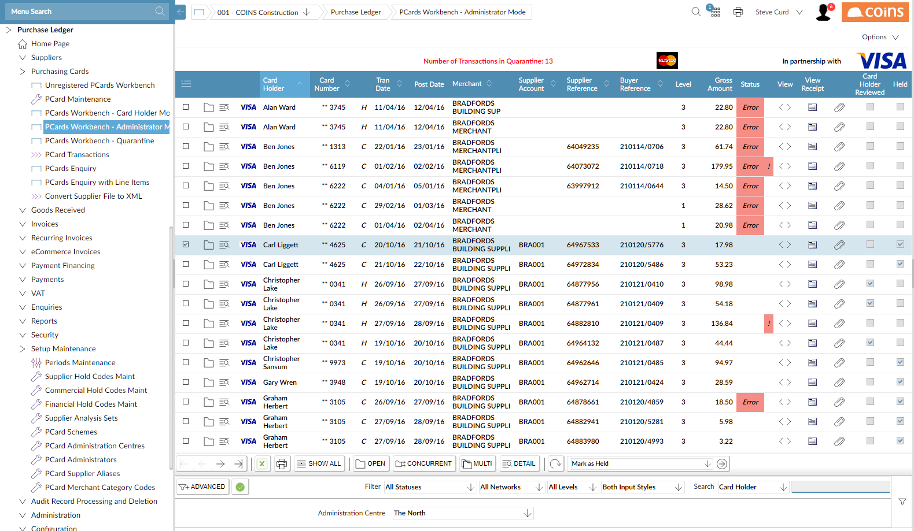
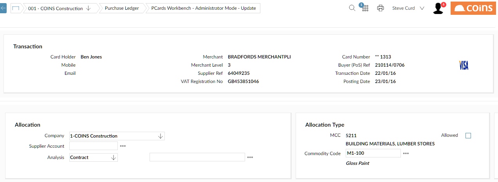
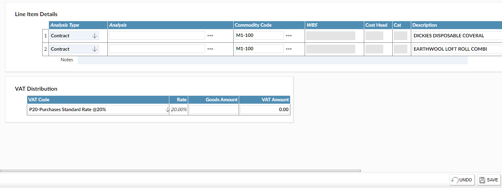

Administering Transactions
- Go to PCards Workbench - Administrator Mode.
- If you look after more than one administration
 .
.

NOTE
If individual card holders are responsible for reviewing transactions, you can set the filter to "Reviewed Only". - If a transaction contains errors, the Status column shows Error. You must correct any errors before you can mark the transaction as "Reviewed". You can see a detailed explanation of the error or errors by pointing to the error indicator.
- If there are warnings that relate to a transaction, the column to the right of the Status column shows a red exclamation mark. You can see the warning text by pointing to this warning indicator.
- You can see an image of the transaction receipt by clicking the
 button in the View Receipt column (or by clicking the card network logo from the transaction detail screen).
button in the View Receipt column (or by clicking the card network logo from the transaction detail screen).

- You can see the XML message for a transaction by clicking the
 button in the View column.
button in the View column. - To fill in any missing transaction details or correct errors, click
 .
.
The Notes field (immediately below the Line Item Details) shows any comments from the card holder.
-
Complete the allocation details for the transaction:

- Confirm the
- Ensure that the
- Confirm the analysis or enter the correct
- If the
- Enter the
- Enter or complete the detailed costing analysis:

- The Commodity Code on the detail lines defaults from the commodity code in the Allocation section (which
- If the
- You can add new lines (for example, to distribute commodities to different WBS codes).
- Ensure that the total of the amounts is equal to the Net Amount.
NOTE
The important thing is to enter the correct amounts. - Enter the full
- Click
 to save your changes.
to save your changes. - To hold a transaction (so that it is not included in the PCard batch), select it, choose Mark as Held from the Choose Action list and click
 .
.
You might hold a transaction if, for example, you want to investigate it further or speak to the card holder; eventually, though, you must allow the transaction.
When you have corrected any errors, you can create a batch of transactions.